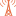

<!doctype html>
<html lang="en">
    <head>
        <meta charset="utf-8">
        <meta http-equiv="X-UA-Compatible" content="IE=edge">
        <meta name="viewport" content="initial-scale=1,user-scalable=no,maximum-scale=1,width=device-width">
        <meta name="mobile-web-app-capable" content="yes">
        <meta name="apple-mobile-web-app-capable" content="yes">
        <link rel="stylesheet" href="css/leaflet.css">
        <link rel="stylesheet" href="css/L.Control.Layers.Tree.css">
        <link rel="stylesheet" href="css/L.Control.Locate.min.css">
        <link rel="stylesheet" href="css/qgis2web.css">
        <link rel="stylesheet" href="css/fontawesome-all.min.css">
        <link rel="stylesheet" href="css/MarkerCluster.css">
        <link rel="stylesheet" href="css/MarkerCluster.Default.css">
        <link rel="stylesheet" href="css/leaflet-search.css">
        <link rel="stylesheet" href="css/leaflet-control-geocoder.Geocoder.css">
        <link rel="stylesheet" href="css/leaflet-measure.css">
        <style>
        html, body, #map {
            width: 100%;
            height: 100%;
            padding: 0;
            margin: 0;
        }
        </style>
        <title></title>
    </head>
    <body>
        <div id="map">
        </div>
        <script src="js/qgis2web_expressions.js"></script>
        <script src="js/leaflet.js"></script>
        <script src="js/L.Control.Layers.Tree.min.js"></script>
        <script src="js/L.Control.Locate.min.js"></script>
        <script src="js/leaflet.rotatedMarker.js"></script>
        <script src="js/leaflet.pattern.js"></script>
        <script src="js/leaflet-hash.js"></script>
        <script src="js/Autolinker.min.js"></script>
        <script src="js/rbush.min.js"></script>
        <script src="js/labelgun.min.js"></script>
        <script src="js/labels.js"></script>
        <script src="js/leaflet-control-geocoder.Geocoder.js"></script>
        <script src="js/leaflet-measure.js"></script>
        <script src="js/leaflet.markercluster.js"></script>
        <script src="js/leaflet-search.js"></script>
        <script src="data/koordinat_1.js"></script>
        <script src="data/TitikCentroidStasiunRadioPulauSumatera_2.js"></script>
        <script>
        var highlightLayer;
        function highlightFeature(e) {
            highlightLayer = e.target;

            if (e.target.feature.geometry.type === 'LineString' || e.target.feature.geometry.type === 'MultiLineString') {
              highlightLayer.setStyle({
                color: '#ffff00',
              });
            } else {
              highlightLayer.setStyle({
                fillColor: '#ffff00',
                fillOpacity: 1
              });
            }
            highlightLayer.openPopup();
        }
        var map = L.map('map', {
            zoomControl:true, maxZoom:28, minZoom:2
        }).fitBounds([[-6.009999081786576,93.91311469826042],[4.015305287205914,112.33612652659895]]);
        var hash = new L.Hash(map);
        map.attributionControl.setPrefix('<a href="https://github.com/tomchadwin/qgis2web" target="_blank">qgis2web</a> &middot; <a href="https://leafletjs.com" title="A JS library for interactive maps">Leaflet</a> &middot; <a href="https://qgis.org">QGIS</a>');
        var autolinker = new Autolinker({truncate: {length: 30, location: 'smart'}});
        function removeEmptyRowsFromPopupContent(content, feature) {
         var tempDiv = document.createElement('div');
         tempDiv.innerHTML = content;
         var rows = tempDiv.querySelectorAll('tr');
         for (var i = 0; i < rows.length; i++) {
             var td = rows[i].querySelector('td.visible-with-data');
             var key = td ? td.id : '';
             if (td && td.classList.contains('visible-with-data') && feature.properties[key] == null) {
                 rows[i].parentNode.removeChild(rows[i]);
             }
         }
         return tempDiv.innerHTML;
        }
        document.querySelector(".leaflet-popup-pane").addEventListener("load", function(event) {
          var tagName = event.target.tagName,
            popup = map._popup;
          // Also check if flag is already set.
          if (tagName === "IMG" && popup && !popup._updated) {
            popup._updated = true; // Set flag to prevent looping.
            popup.update();
          }
        }, true);
        L.control.locate({locateOptions: {maxZoom: 19}}).addTo(map);
        var measureControl = new L.Control.Measure({
            position: 'topleft',
            primaryLengthUnit: 'feet',
            secondaryLengthUnit: 'miles',
            primaryAreaUnit: 'sqfeet',
            secondaryAreaUnit: 'sqmiles'
        });
        measureControl.addTo(map);
        document.getElementsByClassName('leaflet-control-measure-toggle')[0]
        .innerHTML = '';
        document.getElementsByClassName('leaflet-control-measure-toggle')[0]
        .className += ' fas fa-ruler';
        var bounds_group = new L.featureGroup([]);
        function setBounds() {
            map.setMaxBounds(map.getBounds());
        }
        map.createPane('pane_OSMStandard_0');
        map.getPane('pane_OSMStandard_0').style.zIndex = 400;
        var layer_OSMStandard_0 = L.tileLayer('http://tile.openstreetmap.org/{z}/{x}/{y}.png', {
            pane: 'pane_OSMStandard_0',
            opacity: 1.0,
            attribution: '<a href="https://www.openstreetmap.org/copyright">© OpenStreetMap contributors, CC-BY-SA</a>',
            minZoom: 2,
            maxZoom: 28,
            minNativeZoom: 0,
            maxNativeZoom: 19
        });
        layer_OSMStandard_0;
        map.addLayer(layer_OSMStandard_0);
        function pop_koordinat_1(feature, layer) {
            layer.on({
                mouseout: function(e) {
                    for (var i in e.target._eventParents) {
                        if (typeof e.target._eventParents[i].resetStyle === 'function') {
                            e.target._eventParents[i].resetStyle(e.target);
                        }
                    }
                    if (typeof layer.closePopup == 'function') {
                        layer.closePopup();
                    } else {
                        layer.eachLayer(function(feature){
                            feature.closePopup()
                        });
                    }
                },
                mouseover: highlightFeature,
            });
            var popupContent = '<table>\
                    <tr>\
                        <th scope="row">OBJECTID</th>\
                        <td class="visible-with-data" id="OBJECTID">' + (feature.properties['OBJECTID'] !== null ? autolinker.link(feature.properties['OBJECTID'].toLocaleString()) : '') + '</td>\
                    </tr>\
                    <tr>\
                        <th scope="row">PROVINSI</th>\
                        <td class="visible-with-data" id="PROVINSI">' + (feature.properties['PROVINSI'] !== null ? autolinker.link(feature.properties['PROVINSI'].toLocaleString()) : '') + '</td>\
                    </tr>\
                    <tr>\
                        <th scope="row">Shape_Leng</th>\
                        <td class="visible-with-data" id="Shape_Leng">' + (feature.properties['Shape_Leng'] !== null ? autolinker.link(feature.properties['Shape_Leng'].toLocaleString()) : '') + '</td>\
                    </tr>\
                    <tr>\
                        <th scope="row">Shape_Area</th>\
                        <td class="visible-with-data" id="Shape_Area">' + (feature.properties['Shape_Area'] !== null ? autolinker.link(feature.properties['Shape_Area'].toLocaleString()) : '') + '</td>\
                    </tr>\
                    <tr>\
                        <th scope="row">Jumlah</th>\
                        <td class="visible-with-data" id="Jumlah">' + (feature.properties['Jumlah'] !== null ? autolinker.link(feature.properties['Jumlah'].toLocaleString()) : '') + '</td>\
                    </tr>\
                </table>';
            layer.bindPopup(popupContent, {maxHeight: 400});
            var popup = layer.getPopup();
            var content = popup.getContent();
            var updatedContent = removeEmptyRowsFromPopupContent(content, feature);
            popup.setContent(updatedContent);
        }

        function style_koordinat_1_0(feature) {
            if (feature.properties['Jumlah'] >= 0.000000 && feature.properties['Jumlah'] <= 0.666667 ) {
                return {
                pane: 'pane_koordinat_1',
                opacity: 1,
                color: 'rgba(35,35,35,1.0)',
                dashArray: '',
                lineCap: 'butt',
                lineJoin: 'miter',
                weight: 1.0, 
                fill: true,
                fillOpacity: 1,
                fillColor: 'rgba(247,251,255,1.0)',
                interactive: false,
            }
            }
            if (feature.properties['Jumlah'] >= 0.666667 && feature.properties['Jumlah'] <= 12.333333 ) {
                return {
                pane: 'pane_koordinat_1',
                opacity: 1,
                color: 'rgba(35,35,35,1.0)',
                dashArray: '',
                lineCap: 'butt',
                lineJoin: 'miter',
                weight: 1.0, 
                fill: true,
                fillOpacity: 1,
                fillColor: 'rgba(115,178,216,1.0)',
                interactive: false,
            }
            }
            if (feature.properties['Jumlah'] >= 12.333333 && feature.properties['Jumlah'] <= 67.000000 ) {
                return {
                pane: 'pane_koordinat_1',
                opacity: 1,
                color: 'rgba(35,35,35,1.0)',
                dashArray: '',
                lineCap: 'butt',
                lineJoin: 'miter',
                weight: 1.0, 
                fill: true,
                fillOpacity: 1,
                fillColor: 'rgba(8,48,107,1.0)',
                interactive: false,
            }
            }
        }
        map.createPane('pane_koordinat_1');
        map.getPane('pane_koordinat_1').style.zIndex = 401;
        map.getPane('pane_koordinat_1').style['mix-blend-mode'] = 'normal';
        var layer_koordinat_1 = new L.geoJson(json_koordinat_1, {
            attribution: '',
            interactive: false,
            dataVar: 'json_koordinat_1',
            layerName: 'layer_koordinat_1',
            pane: 'pane_koordinat_1',
            onEachFeature: pop_koordinat_1,
            style: style_koordinat_1_0,
        });
        bounds_group.addLayer(layer_koordinat_1);
        map.addLayer(layer_koordinat_1);
        function pop_TitikCentroidStasiunRadioPulauSumatera_2(feature, layer) {
            layer.on({
                mouseout: function(e) {
                    for (var i in e.target._eventParents) {
                        if (typeof e.target._eventParents[i].resetStyle === 'function') {
                            e.target._eventParents[i].resetStyle(e.target);
                        }
                    }
                    if (typeof layer.closePopup == 'function') {
                        layer.closePopup();
                    } else {
                        layer.eachLayer(function(feature){
                            feature.closePopup()
                        });
                    }
                },
                mouseover: highlightFeature,
            });
            var popupContent = '<table>\
                    <tr>\
                        <th scope="row">NO</th>\
                        <td class="visible-with-data" id="NO">' + (feature.properties['NO'] !== null ? autolinker.link(feature.properties['NO'].toLocaleString()) : '') + '</td>\
                    </tr>\
                    <tr>\
                        <th scope="row">KATEGORI (</th>\
                        <td class="visible-with-data" id="KATEGORI (">' + (feature.properties['KATEGORI ('] !== null ? autolinker.link(feature.properties['KATEGORI ('].toLocaleString()) : '') + '</td>\
                    </tr>\
                    <tr>\
                        <th scope="row">ID</th>\
                        <td class="visible-with-data" id="ID">' + (feature.properties['ID'] !== null ? autolinker.link(feature.properties['ID'].toLocaleString()) : '') + '</td>\
                    </tr>\
                    <tr>\
                        <th scope="row">NOMOR</th>\
                        <td class="visible-with-data" id="NOMOR">' + (feature.properties['NOMOR'] !== null ? autolinker.link(feature.properties['NOMOR'].toLocaleString()) : '') + '</td>\
                    </tr>\
                    <tr>\
                        <th scope="row">JALAN</th>\
                        <td class="visible-with-data" id="JALAN">' + (feature.properties['JALAN'] !== null ? autolinker.link(feature.properties['JALAN'].toLocaleString()) : '') + '</td>\
                    </tr>\
                    <tr>\
                        <th scope="row">DESA/KELUR</th>\
                        <td class="visible-with-data" id="DESA/KELUR">' + (feature.properties['DESA/KELUR'] !== null ? autolinker.link(feature.properties['DESA/KELUR'].toLocaleString()) : '') + '</td>\
                    </tr>\
                    <tr>\
                        <th scope="row">KECAMATAN</th>\
                        <td class="visible-with-data" id="KECAMATAN">' + (feature.properties['KECAMATAN'] !== null ? autolinker.link(feature.properties['KECAMATAN'].toLocaleString()) : '') + '</td>\
                    </tr>\
                    <tr>\
                        <th scope="row">KABUPATEN/</th>\
                        <td class="visible-with-data" id="KABUPATEN/">' + (feature.properties['KABUPATEN/'] !== null ? autolinker.link(feature.properties['KABUPATEN/'].toLocaleString()) : '') + '</td>\
                    </tr>\
                    <tr>\
                        <th scope="row">PROVINSI</th>\
                        <td class="visible-with-data" id="PROVINSI">' + (feature.properties['PROVINSI'] !== null ? autolinker.link(feature.properties['PROVINSI'].toLocaleString()) : '') + '</td>\
                    </tr>\
                    <tr>\
                        <th scope="row">LATITUDE</th>\
                        <td class="visible-with-data" id="LATITUDE">' + (feature.properties['LATITUDE'] !== null ? autolinker.link(feature.properties['LATITUDE'].toLocaleString()) : '') + '</td>\
                    </tr>\
                    <tr>\
                        <th scope="row">LONGITUDE</th>\
                        <td class="visible-with-data" id="LONGITUDE">' + (feature.properties['LONGITUDE'] !== null ? autolinker.link(feature.properties['LONGITUDE'].toLocaleString()) : '') + '</td>\
                    </tr>\
                    <tr>\
                        <th scope="row">NAMA STASI</th>\
                        <td class="visible-with-data" id="NAMA STASI">' + (feature.properties['NAMA STASI'] !== null ? autolinker.link(feature.properties['NAMA STASI'].toLocaleString()) : '') + '</td>\
                    </tr>\
                    <tr>\
                        <th scope="row">FREKUENSI</th>\
                        <td class="visible-with-data" id="FREKUENSI">' + (feature.properties['FREKUENSI'] !== null ? autolinker.link(feature.properties['FREKUENSI'].toLocaleString()) : '') + '</td>\
                    </tr>\
                    <tr>\
                        <th scope="row">JARINGAN</th>\
                        <td class="visible-with-data" id="JARINGAN">' + (feature.properties['JARINGAN'] !== null ? autolinker.link(feature.properties['JARINGAN'].toLocaleString()) : '') + '</td>\
                    </tr>\
                    <tr>\
                        <th scope="row">BADAN USAH</th>\
                        <td class="visible-with-data" id="BADAN USAH">' + (feature.properties['BADAN USAH'] !== null ? autolinker.link(feature.properties['BADAN USAH'].toLocaleString()) : '') + '</td>\
                    </tr>\
                    <tr>\
                        <td colspan="2">' + (feature.properties['PHOTO/GAMB'] !== null ? '' : '') + '</td>\
                    </tr>\
                </table>';
            layer.bindPopup(popupContent, {maxHeight: 400});
            var popup = layer.getPopup();
            var content = popup.getContent();
            var updatedContent = removeEmptyRowsFromPopupContent(content, feature);
            popup.setContent(updatedContent);
        }

        function style_TitikCentroidStasiunRadioPulauSumatera_2_0() {
            return {
                pane: 'pane_TitikCentroidStasiunRadioPulauSumatera_2',
        rotationAngle: 0.0,
        rotationOrigin: 'center center',
        icon: L.icon({
            iconUrl: 'markers/TitikCentroidStasiunRadioPulauSumatera_2.svg',
            iconSize: [30.4, 30.4]
        }),
                interactive: true,
            }
        }
        map.createPane('pane_TitikCentroidStasiunRadioPulauSumatera_2');
        map.getPane('pane_TitikCentroidStasiunRadioPulauSumatera_2').style.zIndex = 402;
        map.getPane('pane_TitikCentroidStasiunRadioPulauSumatera_2').style['mix-blend-mode'] = 'normal';
        var layer_TitikCentroidStasiunRadioPulauSumatera_2 = new L.geoJson(json_TitikCentroidStasiunRadioPulauSumatera_2, {
            attribution: '',
            interactive: true,
            dataVar: 'json_TitikCentroidStasiunRadioPulauSumatera_2',
            layerName: 'layer_TitikCentroidStasiunRadioPulauSumatera_2',
            pane: 'pane_TitikCentroidStasiunRadioPulauSumatera_2',
            onEachFeature: pop_TitikCentroidStasiunRadioPulauSumatera_2,
            pointToLayer: function (feature, latlng) {
                var context = {
                    feature: feature,
                    variables: {}
                };
                return L.marker(latlng, style_TitikCentroidStasiunRadioPulauSumatera_2_0(feature));
            },
        });
        var cluster_TitikCentroidStasiunRadioPulauSumatera_2 = new L.MarkerClusterGroup({showCoverageOnHover: false,
            spiderfyDistanceMultiplier: 2});
        cluster_TitikCentroidStasiunRadioPulauSumatera_2.addLayer(layer_TitikCentroidStasiunRadioPulauSumatera_2);

        bounds_group.addLayer(layer_TitikCentroidStasiunRadioPulauSumatera_2);
        cluster_TitikCentroidStasiunRadioPulauSumatera_2.addTo(map);
        var osmGeocoder = new L.Control.Geocoder({
            collapsed: true,
            position: 'topleft',
            text: 'Search',
            title: 'Testing'
        }).addTo(map);
        document.getElementsByClassName('leaflet-control-geocoder-icon')[0]
        .className += ' fa fa-search';
        document.getElementsByClassName('leaflet-control-geocoder-icon')[0]
        .title += 'Search for a place';
        var baseMaps = {};
        var overlaysTree = [
            {label: ' Titik Centroid Stasiun Radio Pulau Sumatera', layer: cluster_TitikCentroidStasiunRadioPulauSumatera_2},
            {label: 'koordinat<br /><table><tr><td style="text-align: center;"></td><td>Sedikit</td></tr><tr><td style="text-align: center;"></td><td>Lumayan</td></tr><tr><td style="text-align: center;"></td><td>Banyak</td></tr></table>', layer: layer_koordinat_1},
            {label: "OSM Standard", layer: layer_OSMStandard_0},]
        var lay = L.control.layers.tree(null, overlaysTree,{
            //namedToggle: true,
            //selectorBack: false,
            //closedSymbol: '&#8862; &#x1f5c0;',
            //openedSymbol: '&#8863; &#x1f5c1;',
            //collapseAll: 'Collapse all',
            //expandAll: 'Expand all',
            collapsed: true,
        });
        lay.addTo(map);
        setBounds();
        var i = 0;
        layer_koordinat_1.eachLayer(function(layer) {
            var context = {
                feature: layer.feature,
                variables: {}
            };
            layer.bindTooltip((layer.feature.properties['PROVINSI'] !== null?String('<div style="color: #323232; font-size: 10pt; font-family: \'Open Sans\', sans-serif;">' + layer.feature.properties['PROVINSI']) + '</div>':''), {permanent: true, offset: [-0, -16], className: 'css_koordinat_1'});
            labels.push(layer);
            totalMarkers += 1;
              layer.added = true;
              addLabel(layer, i);
              i++;
        });
        var i = 0;
        layer_TitikCentroidStasiunRadioPulauSumatera_2.eachLayer(function(layer) {
            var context = {
                feature: layer.feature,
                variables: {}
            };
            layer.bindTooltip((layer.feature.properties['NAMA STASI'] !== null?String('<div style="color: #ffffff; font-size: 10pt; font-family: \'Open Sans\', sans-serif;">' + layer.feature.properties['NAMA STASI']) + '</div>':''), {permanent: true, offset: [-0, -16], className: 'css_TitikCentroidStasiunRadioPulauSumatera_2'});
            labels.push(layer);
            totalMarkers += 1;
              layer.added = true;
              addLabel(layer, i);
              i++;
        });
        map.addControl(new L.Control.Search({
            layer: cluster_TitikCentroidStasiunRadioPulauSumatera_2,
            initial: false,
            hideMarkerOnCollapse: true,
            propertyName: 'NAMA STASI'}));
        document.getElementsByClassName('search-button')[0].className +=
         ' fa fa-binoculars';
        resetLabels([layer_koordinat_1,layer_TitikCentroidStasiunRadioPulauSumatera_2]);
        map.on("zoomend", function(){
            resetLabels([layer_koordinat_1,layer_TitikCentroidStasiunRadioPulauSumatera_2]);
        });
        map.on("layeradd", function(){
            resetLabels([layer_koordinat_1,layer_TitikCentroidStasiunRadioPulauSumatera_2]);
        });
        map.on("layerremove", function(){
            resetLabels([layer_koordinat_1,layer_TitikCentroidStasiunRadioPulauSumatera_2]);
        });
        </script>
    </body>
</html>
